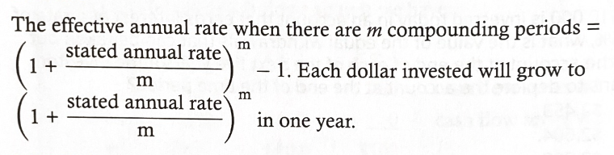

Corporate Finance
Learning Outcomes Statements
The Time Value of Money
6.a. Interpret interest rates as required rates of return, discount rates, or opportunity costs.
- An interest rate can be interpreted as the rate of return required in equilibrium for a particular investment, the discount rate for calculating the present value of future cash flows, or as the opportunity cost of consuming now, rather than saving and investing.
6.c. Calculate and interpret the effective annual rate, given the stated annual interest rate and the frequency of compounding.

6.d. Solve time value of money problems for different frequencies of compounding.
- For non-annual time value of money problems, divide the stated annual interest rate by the number of compounding periods per year, m, and multiply the number of years by the number of compounding periods per year.
6.e. Calculate and interpret the future value (FV) and present value (PV) of a single sum of money, an ordinary annuity, an annuity due, a perpetuity (PV only), and a series of unequal cash flows.

- An annuity is a series of equal cash flows that occurs at evenly spaced intervals over time. Ordinary annuity cash flows occur at the end of each time period. Annuity due cash flows occur at the beginning of each time period.
- Perpetuities are annuities with infinite lives (perpetual annuities):

- The present (future) value of any series of cash flows is equal to the sum of the present (future) values of the individual cash flows.
6.f. Demonstrate the use of a time line in modeling and solving time value of money problems.
- Constructing a time line showing future cash flows will help in solving many types of TVM problems. Cash flows occur at the end of the period depicted on the time line. The end of one period is the same as the beginning of the next period. For example, a cash flow at the beginning of Year 3 appears at time t = 2 on the time line.
Introduction to Corporate Governance and Other ESG Considerations
31.a. Describe corporate governance.
- Corporate governance refers to the internal controls and procedures of a company that delineate the rights and responsibilities of various groups and how conflicts of interest among the various groups are to be resolved.
31.b. Describe a company’s stakeholder groups and compare interests of stakeholders groups.
- The primary stakeholders of a corporation include shareholders, the board of directors, senior management, employees, creditors, and suppliers.
31.c. Describe principal-agent and other relationships in corporate governance and the conflicts that may arise in these relationships.
- The principal-agent relationship refers to owners employing agents to act in their interests. Conflicts can arise because the agent’s incentives may not align with hose of the owner or, more generally, because the interests of one group within a corporation are not the same as those of other groups.
31.d. Describe stakeholder management.
- Stakeholder management refers to the management of the company relations with stakeholders and is based on having a good understanding of stakeholder interests and maintaining effective communication with stakeholders.
31.e. Describe mechanisms to manage stakeholder relationships and mitigate associated risks.
- The management of stakeholder relationships is based on a company’s legal, contractual, organizational, and government infrastructures.
31.f. Describe functions and responsibilities of a company’s board of directors and its committees.
- The duties of a board of directors include:
- Selecting senior management, setting their compensation, and evaluating their performance.
- Setting the strategic direction for the company.
- Approving capital structure changes, significant acquisitions, and large investment expenditures.
- Reviewing company performance and implementing any necessary corrective steps.
- Planning for continuity of management and the succession of the CEO.
- Establishing, monitoring, and overseeing the firm’s internal controls and risk management.
- Ensuring the quality of the firm’s financial reporting and internal audit.
31.g. Describe market and non-market factors that can affect stakeholder relationships and corporate governance.
- Factors that can affect stakeholder relationships and corporate governance include:
- Communication and engagement with shareholders.
- Shareholder activism.
- Threat of hostile takeover and existence of anti-takeover provisions.
- Company’s legal environment.
- Growth of firms that advise funds on proxy voting and rate companies’ corporate governance.
31.h. Identify potential risks of poor corporate governance and stakeholder management and identify benefits from effective corporate governance and stakeholder management.
- The risks of poor governance include weak control systems, poor decision making, legal risk, reputational risk, and default risk. Good corporate governance can improve operational efficiency and performance, reduce default risk, reduce the cost of debt, improve financial performance, and increase firm value.
31.i. Describe factors relevant to the analysis of corporate governance and stakeholder management.
- Elements of corporate governance that analysts have found to be relevant include ownership and voting structures, board composition, management remuneration, the composition of shareholders, strength of shareholder rights, and management of long-term risks.
Capital Budgeting
32.a. Describe the capital budgeting process and distinguish among the various categories of capital projects.
- Capital budgeting is the process of evaluating capital projects, projects with cash flows over more than one year.
- The four steps the capital budgeting process are:
- Generate investment ideas
- Analyze project ideas
- Create firm-wide capital budget
- Monitor decisions and conduct a post-audit
- Categories of capital projects include:
- Replacement projects for maintaining the business or for cost reduction
- Expansion projects
- New product or market development
- Mandatory projects to meet environmental or regulatory requirements
- Other projects, such as research and development or pet projects of senior management
32.b. Describe the basic principles of capital budgeting.
- Capital budgeting decisions should be based on incremental after-tax cash flows, the expected differences in after-tax cash flows if a project is undertaken. Sunk (already incurred) costs are not considered, but externalities and cash opportunity costs must be included in project cash flows.
32.c. Explain how the evaluation and selection of capital projects is affected by mutually exclusive projects, project sequencing, and capital rationing.
- Acceptable independent projects can all be undertaken, while a firm must choose between or among mutually exclusive projects.
- Project sequencing concerns the opportunities for future capital projects that may be created by undertaking a current project.
- If a firm cannot undertake all profitable projects because of limited ability to raise capital, the firm should choose that group of fundable positive NPV projects with the highest total NPV.
32.d. Calculate and interpret net present value (NPV), internal rate of return (IRR), payback period, discounted payback period, and profitability index (PI) of a single capital project.
- NPV is the sum of present value of a project’s expected cash flows and represents the increase in firm value from undertaking a project. Positive NPV projects should be undertaken, but negative NPV projects are expected to decrease the value of the firm.
- The IRR is the discount rate that equates the present values of the project’s expected cash inflows and outflows and, thus, is the discount rate for which the NPV of a project is zero. A project for which the IRR is greater (less) than the discount rate will have an NPV that is positive (negative) and should be accepted (not be accepted).
- The payback (discounted payback) period is the number of years required to recover the original cost of the project (original cost of the project in present value terms).
- The profitability index is the ratio of the present value of a project’s future cash flows to its initial cash outlay and is greater than one when a project’s NPV is positive.
32.e. Explain the NPv profile, compare the NPV and IRR methods when evaluating independent and mutually exclusive projects, and describe the problems associated with each of the evaluation methods.
- An NPV profile plots a project’s NPV as a function of the discount rate, and it intersects the horizontal axis (NPV = 0) at its IRR. If two NPV profiles intersect at some discount rate, that is the crossover rate, and different projects are preferred at discount rates higher and lower than the crossover rate.
32.f. Contrast the NPv decision rule to the IRR decision rule and identify problems associated with the IRR rule.
- For projects with conventional cash flow patterns, the NPV and IRR methods produce the same accept / reject decision, but projects with unconventional cash flow patterns can produce multiple IRRs or no IRR.
- Mutually exclusive projects can be ranked based on their NPVs, but rankings based on other methods will not necessarily maximize the value of the firm.
Cost of Capital
33.a. Calculate and interpret the weighted average cost of capital (WACC) of a company.

- The weighted average cost of capital, or WACC, is calculated using weights based on the market values of each component of a firm’s capital structure and is the correct discount rate to use to discount the cash flows of projects with risk equal to the average risk of a firm’s projects.
33.b. Describe how taxes affect the cost of capital from different capital sources.
- Interest expense on a firm’s debt is tax deductible, so the pre-tax cost of debt must be reduced by the firm’s marginal tax rate to get an after-tax cost of debt capital.

- The pre-tax and after-tax capital costs are equal for both preferred stock and common equity because dividends paid by the firm are not tax deductible.
33.c. Describe the use of target capital structure in estimating WACC and how target capital structure weights may be determined.
- WACC should be calculated based on a firm’s target capital structure weights.
- If information on a firm’s target capital structure is not available, an analyst can use the firm’s current capital structure, based on market values, or the average capital structure in the firm’s industry as estimates of the target capital structure.
33.d. Explain how the marginal cost of capital and the investment opportunity schedule are used to determine the optimal capital budget.
- A firm’s marginal cost of capital (WACC at each level of capital investment) increases as it needs to raise larger amounts of capital. this is shown by an upward-sloping marginal cost of capital curve.
- An investment opportunity schedule shows the IRRs of (in decreasing order), and the initial investment amounts for, a firm’s potential proejcts.
- The intersection of a firm’s investment opportunity schedule with its marginal cost of capital curve indicates the optimal amount of capital expenditure, the amount of investment required to undertake all positive NPV projects.
33.e. Explain the marginal cost of capital’s role in determining the net present value of a project.
- The marginal cost of capital (the WACC for additional units of capital) should be used as the discount rate when calculating project NPVs for capital budgeting decisions.
- Adjustments to the cost of capital are necessary when a project differs in risk from the average risk of a firm’s existing projects. The discount rate should be adjusted upward for higher-risk projects and downward for lower-risk projects.
33.f. Calculate and interpret the cost of debt capital using the yield-to-maturity approach and the debt-rating approach.
- The before-tax cost of fixed-rate debt capital is the rate at which the firm can issue new debt.
- The yield-to-maturity approach assumes the before-tax cost of debt capital is the YTM on the firm’s existing publicly traded debt.
- If a market YTM is not available, the analyst can use the debt rating approach, estimating the before-tax cost of debt capital based on market yields for debt with the same rating and average maturity as the firm’s existing debt.
33.g. Calculate and interpret the cost of noncallable, noncovertible preferred stock.
- The cost (and yield) of noncallable, nonconvertible preferred stock is simply the annual dividend divided by the market price of preferred shares.
33.h. Calculate and interpret the cost of equity capital using the capital asset pricing model approach, the dividend discount model approach, and the bond-yield-plus risk-premium approach.
- The cost of equity capital is the required rate of return on the firm’s common stock.
- There are three approaches to estimating

33.i. Calculate and interpret the beta and cost of capital for a project.
When a project’s risk differs from that of the firm’s average project, we can use the beta of a company or group of companies that are exclusively in the same business as the project to calculate the project’s required return. This pure-play method involves the following steps:
- Estimating the beta for a comparable company or companies.
- Unlever the beta to get the asset beta using the marginal tax rate and debt-to-equity ratio for the comparable company:

./Untitled%206.png - Re-lever the beta using the marginal tax rate and debt-to-equity ratio for the firm considering the project:

./Untitled%207.png Use the CAPM to estimate the required return on equity to use when evaluating the project.
Calculate the WACC for the firm using the project’s required return on equity.
33.k. Describe the marginal cost of capital schedule, explain why it may be upward-sloping with respect to additional capital, and calculate and interpret its break-points.
- The marginal cost of capital schedule shows the WACC for successively greater amounts of new capital investment for a period, such as the coming year.
- The MCC schedule is typically upward-sloping because raising greater amounts of capital increases the cost of equity and debt financing. Break points (increases) in the marginal cost of capital schedule occur at amounts of total capital raised equal to the amount of each source of capital at which the component cost of capital increases, divided by the target weight for the source of capital.
33.l. Explain and demonstrate the correct treatment of floatation costs.
- The correct method to account for floatation costs of raising new equity capital is to increase a project’s initial cash outflow by the flotation cost attributable to the project when calculating the project’s NPV.
Measures of Leverage
34.a. Define and explain leverage, business risk, sales risk, operating risk, and financial risk and classify a risk.
- Leverage increases the risk and potential return of a firm’s earnings and cash flows.
- Operating leverage increases with fixed operating costs.
- Financial leverage increases with fixed financing costs.
- Sales risk is uncertain about the firm’s sales.
- Business risk refers to the uncertainty about operating earnings (EBIT) and results from variability in sales and expenses. Business risk is magnified by operating leverage.
- Financial risk refers to the additional variability of EPS compared to EBIT. Financial risk increases with greater use of fixed cost financing (debt) in a company’s capital structure.
34.b. Calculate and interpret the degree of operating leverage, the degree of financial leverage, and the degree of total leverage.
- The degree of operating leverage (DOL) is calculated as Q(P - V) / (Q(P - V) - F) and is interpreted as %delta EBIT / %delta sales.
- The degree of financial leverage (DFL) is the calculated as EBIT / EBIT - I and is interpreted as %delta EPS / %delta EBIT.
- The degree of total leverage (DTL) is the combination of operating and financial leverage and is calculated as DOL * DFL and interpreted as %delta EPS / %delta sales.
34.c. Analyze the effect of financial leverage on a company’s net income and return on equity.
- Using more debt and less equity in a firm’s capital structure reduces net income through added interest expense but also reduces net equity. The net effect can be to either increase or decrease ROE.
34.d. Calculate the breakeven quantity of sales and determine the company’s ent income at various sales levels.
- The breakeven quantity of sales is the amount of sales necessary to produce a net income of zero (total revenue just covers total costs) and can be calculated as:
- (Fixed operating costs + fixed financing costs) / (price - variable cost per unit)
- Net income at various sales levers can be calculated as total revenue (i.e., price * quantity sold) minus total costs (i.e., total fixed costs plus total variable costs).
34.e. Calculate and interpret the operating breakeven quantity of sales.
- The operating breakeven quantity of sales is the amount of sales necessary to produce an operating income of zero (total revenue just covers total operating costs) and can be calculated as:
- fixed operating costs / (price - variable cost per unit)
Working Capital Management
35.a. Describe primary and secondary sources of liquidity and factors that influence a company’s liquidity position.
- Primary sources of liquidity are the sources of cash a company uses in its normal operations. If its primary sources are inadequate, a company can use secondary sources of liquidity such as asset sales, debt renegotiation, and bankruptcy reorganization.
- A company’s liquidity position depends on the effectiveness of its cash flow management and is influenced by drags on its cash inflows (e.g., uncollected receivables, obsolete inventory) and pulls on its cash outflows (e.g., early payments to vendors, reductions in credit limits.
35.b. Compare a company’s liquidity measures with hose of peer companies.
- Measures of a company’s short-term liquidity include:
- Current ratio = current assets / current liabilities
- Quick ratio = (cash + market securities + receivables) / current liabilities
- Measures of how well a company is managing its working capital include:
- Receivables turnover = credit sales / average receivables
- Number of days of receivables = 365 / receivables turnover
- Inventory turnover = cost of goods sold / average inventory
- Number of days of inventory = 365 / inventory turnover
- Payables turnover = purchases / average trade payables
- Numbers of days of payables = 365 / payables turnover
35.c. Evaluate working capital effectiveness of a company based on its operating and cash conversion cycles and compare the company’s effectiveness with that of peer companies.
- The operating cycle and the cash conversion cycle are summary measures of the effectiveness of a company’s working capital management.
- Operating cycle = days of inventory + days of receivables
- Cash conversion cycle = days of inventory + days of receivables - days of payables
- Operating and cash conversion cycles that are high relative to a company’s peers suggest the company has too much cash tied up in working capital.
35.d. Describe how different types of cash flows affect a company’s net daily cash position.
- To manage its net daily cash position, a firm needs to forecast its cash inflows and outflows and identify periods when its cash balance may be lower than needed or higher than desired. Cash inflows include operating receipts, cash from subsidiaries, cash received from securities investment, tax refunds, and borrowing. Cash outflows include purchases, payroll, cash transfers to subsidiaries, interest and principal paid on debt, investments in securities, taxes paid, and dividends paid.
35.e. Calculate and interpret comparable yields on various securities, compare portfolio returns against a standard benchmark, and evaluate a company’s short-term investment policy guidelines.
- commonly used annualized yields for short-term pure discount securities are based on the days to maturity (days) of the securities and include:
- Discount-basis yields = % discount from face value * (360 / days)
- Money market yield = Holding Period Yield * (360 / days)
- Bond-equivalent yields = HPY * (365 / days)
- The overall objective of short-term cash management is to earn a reasonable return while taking on only very limited credit and liquidity risk. Returns on the firm’s short-term securities investments should be stated as bond equivalent yields. The return on the portfolio should be expressed as a weighted average of these yields.
- An investment policy statement should include the objectives of the cash management program, details of who is authorized to purchase securities, authorization for the purchase of specific types of securities, limitations on portfolio proportions of each type, and procedures in the event that guidelines are violated.
35.f. Evaluate a company’s management of accounts receivable, inventory, and accounts payable over time and compared to peer companies.
- A firm’s inventory, receivables, and payables management can be evaluated by comparing days of inventory, days of receivables, and days of payables for the firm over time and by comparing them to industry averages or averages for a group of peer companies.
- A receivables aging schedule and a schedule of weighted average days of receivables can each provide additional detail for evaluating receivables management.
35.g. Evaluate the choices of short-term funding available to a company and recommend a financing method.
- There are many choices for short-term borrowing. The firm should keep costs down while also allowing for future flexibility and alternative sources.
- The choice of short-term funding sources depends on a firm’s size and creditworthiness. Sources available, in order of decreasing firm creditworthiness and increasing cost, include:
- Commercial paper
- Bank lines of credit
- Collateralized borrowing
- Nobank financing
- Factoring